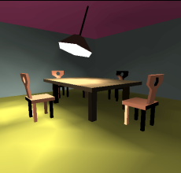
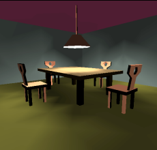
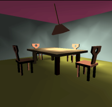
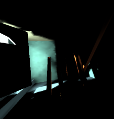
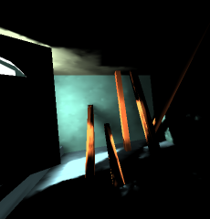
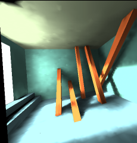

Shrnutí známých metod výpočtu globálního osvětlení se zřetelem
na použití v komplexních dynamických scénách. Metody urychlení
zobrazení a výpočtu osvětlení.
Návrh řešení založený na hierarchické Monte Carlo radiositě
s clustery.
Návrh řešení založený na stínových mapách,
implementace indexových stínových map se standardním OpenGL,
ošetření artefaktů.
Pozn: oficiální název práce je Radiosita v dynamických scénách.



(dynamická scéna při 2fps - každý snímek počítán nezávisle)



(dynamická scéna při 2fps - aktualizován vliv dynamických objektů)
Redukovaný obsah doprovodného CD (kompletní zdrojáky, scény, zkompilováno pro DOS a Linux, RAR, 0.9MB)